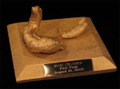

Infant Bowel Movements: Deciphering the Poo Color Spectrum
Infant bowel movements speak volumes about your infant's health. Understanding the "Language of Poo" can be
a useful tool for evaluating your baby's overall wellness.
It's so important to know what normal, occasionally normal, and not normal looks like for your baby.
How could something so small create so much of something so disgusting? ~ Three Men and a Baby
The Colors of the Infant Bowel Movement Rainbow
Unlike traditional rainbow colors, the rainbow of infant bowel movements isn't very pretty.
In fact, it's downright disgusting. After all, who wants to look too closely at what is actually
in that diaper?
But you...(cue patriotic music)...you are a mom. And look you must.
So onward we bravely plod...
The colors of infant bowel movements indicate how fast the last meal traveled through the intestines.
In the upper regions of the intestine, stools take on a green color, then yellow, and finally brown.
These are all normal colors, and don't necessarily (on their own) indicate diarrhea or other complications.
Breastfed infant bowel movements range from golden orange to mustard yellow. It often has little seed-like
specks in it. It tends to smell "sweeter" than formula infant bowel movements (but who's actually testing
this?).
Many breastfeeding mothers mistakenly believe that their babies have diarrhea because of the
watery-consistency of the stool. This is due to the natural-laxative components of breast milk, so unless
the stools seem extremely frequent, there is no need to contact your doctor.
Babies that are fed formula tend to stick to the neutral palette of infant bowel movements.
They are usually more brownish-tan in color and also may have the texture of "seeds".
Recently, my sister took all five of her children out to run errands to the doctor, bank and grocery store. (That alone should tell you how amazing
she is.)
The whole afternoon, Jenny smelled poopy diaper everywhere. Attempting to minimize the nose-scrunching,
she changed her 9-month-old at every errand stop. Despite all this, she still smelled the foul stench of
fecal matter. Slightly embarrassed but undefeated, she vowed to give him a bath the second they stepped
back into the house.
As they all piled out of the van at the grocery store, her oldest, Elijah, turned and asked,
"Hey Mom, what's that on the back of your shirt?"
Horrified, Jenny turned to see a huge streak of poo down the left side of her white shirt.
Yes, Will had leaked as she carried him around on her hip. And yes, she wore that streak at the doctor's office, bank
and even had to suffer that stain through the grocery store. Visible for all the world to see (and smell).
Consider this, the next time you suffer an infant bowel movement disaster.
There may be times when your infant's messy diaper displays strange green poop. Elena has this almost
constantly. There are a few questions you can ask to help with diagnosis:
Is her formula iron-fortified?
Iron-fortified formula sometimes causes a dark greenish tint. If she is happy and doesn't seem to be constipated, no change is necessary.
Is she allergic to dairy?
Dairy products are one of the most common food
allergies for babies. If you are breastfeeding, try to decrease or eliminate diary products in your diet.
If you are using formula, switch to soy-based. You should see improvement in a week or two.
If switching to soy doesn't work, ask your doctor about getting a sample of a hypoallergenic formula.
That way you can let him try it before you buy it.
Do you have a breast milk imbalance?
Green and frothy stools are possible
indicators of a breast milk imbalance. The first milk that is expressed during a breastfeeding session
is called foremilk. It is thinner and low fat.
After several minutes of nursing, the hindmilk is pulled
from the back of the breast ducts. This milk is richer and fattier.
Babies receiving too much foremilk will
sometimes have green stools and achy tummies. Make sure you don't switch breasts too soon and allow enough time for her to get to the hindmilk "good stuff".
Is she artistic?
It is possible that your little one just has a flair for color and wants even her poop to be unique.
This was our final green poop diagnosis for Elena. A future Van Gogh, perhaps?
A stool that appears chalky may be an indicator that the liver is not producing enough bile to digest the food.
This can be serious, so call your doctor for advice.
Other than meconium, there are two other instances that may create black stools in your baby's poopy diaper.
One is a common and easy-to-remedy situation. The other is more serious and warrants an immediate doctor call.
Simple: If your baby is on iron supplements or drinks iron-fortified formula, this may
be a simple sign of too much iron in her system. These stools are a deep brownish-black color. Just cut back the
supplements or switch to a low-iron formula and the problem should be alleviated.
Serious: If they are night-black and tarry-looking (similar to meconium, but it
is not his first stool), this could be a more serious sign of intestinal bleeding. Call your doctor right away,
and keep the diaper in case he requests to see it.
Red stools can also be a sign of several things. If your baby has been constipated, there may be small
cuts or tears on his anus, producing bright red blood in his messy diaper. This will cease when you relieve
the constipation.
This blood can also be caused by a really bad diaper rash, so treat that as well and it will go away.
Just in case, I would at least call your doctor and describe it to him over the phone. He will tell you
if you should come in for a visit.
If you see blood in the stool that is like dark raspberry jelly or is streaked with red mucus, call your
doctor immediately.
Fickle Fecal Matter
The American Academy of Pediatrics writes this:
"Keep in mind that occasional variations in color and consistency of the stools are normal. For
example, if the digestive process slows down because the baby has had a particularly large amount of cereal
that day or foods requiring more effort to digest, the stools may become green; or if the baby is given
supplemental iron (perhaps in formula), the stools may turn dark brown."
Translation? Infant bowel movements can change quickly, so don't be surprised if what was green
yesterday is yellow today.
After you introduce solids to your baby around the 6th month you will see some changes in infant bowel
movements. The induction of new foods will require some digestive practice.
If her bowel habits seem to fluctuate and become irregular, don't be too alarmed. Be patient and give her lots of water. Her system should
eventually regulate itself back to normalcy.
Precious Moments for Tom Cruise

Yes, these days of infant bowel movements are precious - because toddler bowel movements are much, much
worse. Why not make these cherished moments eternal and profitable?
Actor Tom Cruise and wife Katie Holmes sold a bronze casting of their daughter Suri's first poop
(after starting solids).
It was sold via Ebay to Golden Palace.com for $10,000. After the sale,
the bronzing proceeds were donated to the Kristin Brooks Hope Center, a suicide prevention nonprofit. Who said recycling isn't profitable?
I just subscribed to the site, and I'm very happy I did. I have worked in the medical field for several years and love to have good resources for when things come up... ~ Crystal S.
What a great site and thanks for having it available! ~ Bernadette W.
I'm very excited to start receiving the newsletter. I've checked out your site a couple times and I loooovve how it's arranged, your language, and tips - it's great! ~ Emily N.
Heather, I can't express how happy I am I discovered your site! ~ Liza T.
Thank you Heather, for your wonderful newsletter. There is always something new! ~ Desiree T.
I'm a 1st time young mom, 23 and single, so I have found very very helpful...I can't seem to stop myself telling everyone I know about you, some thought you were my mom! ~ Vuyiswa N.
Your website is very helpful and I discovered a couple of great online stores. 'Cause I'm not a big reader, it is very nice that I can find the most important information through your
website. ~ Tonya G.
Thanks Heather! Your Milestone eBook is SO detailed and so correct. My son is doing all or most of the things and many are not mentioned in the usual books/sites. Great job and keep it up! ~ Anwesha C.
Thanks so much for creating such an AWESOME website. I really appreciate your sense of humor and real writing style. ~ Andrea Z.
My baby refused all bottles until you showed me the MAM bottle. Thank you so much for the recommendation. I wouldn't have known about them if not for your website. ~ Jennifer at Sweet Lilly ConfectionsThank you ladies! Talk about great motivation to keep writing...


 I just subscribed to the site, and I'm very happy I did. I have worked in the medical field for several years and love to have good resources for when things come up...
I just subscribed to the site, and I'm very happy I did. I have worked in the medical field for several years and love to have good resources for when things come up...